Version
A standalone map building tool. Works offline as an installed Progressive Web App (map tiles you have viewed are cached) or inside Electron.
V select · G move · F presenter · M marker · T text · L line · P polygon · R rectangle · C circle · S SVG · D distance · A area · Esc cancel · Del delete · Ctrl+Z/Y undo/redo · Ctrl+S save file · / search
Open with URL parameters: ?q=Eiffel+Tower, ?lat=48.858&lon=2.294&zoom=16, ?center=48.858,2.294, ?poi=cafe.